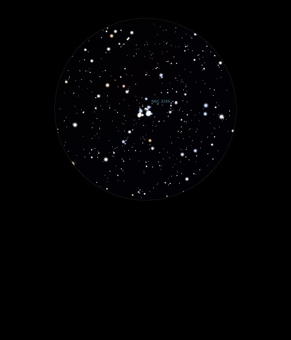

NGC 2169
Open
Cluster in Orion
NGC 2169
Mag 5.9
The 37 Cluster
09/12/13
A compact but bright Open Cluster, visible in finderscope
In 12mm it is split into two with a dark band between
I counted nine stars in the top region, of which HIP 29126 at
Mag 7.15 is the brightest, and six stars in the lower section,
HIP 29106 at Mag 8.1 being the brightest in this region
21/01/17
Easy to locate
this very small Open Cluster
With imagination you can see
a '3' and a '7' in separate parts of the cluster,
made up of the brighter stars but even these are
very faint , and upside down!
They look
more like a couple of flying ducks to me,
sprinkled with stardust
About the
brightest star in the cluster is HIP 29126,
the top right of the '3' which is a close double,
the A component is Mag 7.15 and
the B Mag 8.15 but they
are very close, only just separated
in 8mm, with the fainter towards HIP
29127 at Mag 8.70